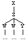
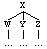
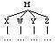
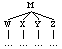

What's new
CorpusSearch Version 1.1 contains the following new features:
CorpusSearch requires two types of input files:
The default output filename can be changed using the -out switch (in unix/linux implementations; for mac/windows follow the on-screen instructions). The following command line will create an output file called newfilename.out from the query query.q.Command File Output File nouns.q nouns.out nouns.c nouns.cod
The output of a search using a query command file is a regular output file (extension .out), which contains all the tokens (or portions of the tokens) in the source file(s) which match the query. In addition, it contains summary statistics reporting the number of tokens searched and matched. Optionally, CorpusSearch can output the complement of a query (extension .cmp), that is, all the tokens that don't match the query (see print_complement).java CorpusSearch query.q input.psd -out newfilename.out
The output of a search using a coding command file is a coded file (extension .cod) which contains all the tokens from the original along with a coding string for each as specified in the coding file (see Coding).
File Type Extension query file .q corpus file .psd output file .out complement file .cmp coding file .c coded file .cod
A query file may have any filename but must end with the extension .q (e.g., adj.q, vp-np.q, etc.). It contains commands to control the search and the printing of the output. Only two commands must be specified for every search, the node command (although this command may be contained a preference file instead) and the query command. All other commands have default settings and are only used when there is a need to change the default.
The node
To run a CorpusSearch query it is necessary to choose a node which defines the search
domain (see CorpusSearch Lite: Setting the NODE for an
explanation of the node). See Search commands:
node.
The query
A query minimally consists of a single search-function call. A search-function defines a relationship over
one or two arguments called search-terms. The
search-function and search-terms are surrounded by parentheses. In the
following example, iDominates is a search-function which takes two
search-terms, NP and N. (NP iDominates N) is a
search-function call.
Thus, a minimal complete query command file contains a node and a query. The node may alternatively be contained in a preference file.(NP iDominates N)
node: NP* query: (NP iDominates N)
There are two logical operators which apply to search-terms: Logical operator NOT (!), and Logical operator OR (|).
Wild cards
There are two wild cards that can be used with search-terms. The asterix (*) matches 0 or more
characters and can be used anywhere within a search-term. The following
query will find PPs whose preposition begins with the letter "sw". It will
match "swa" and "swylce", but not, for instance, "Swa". sw*c*, on
the other hand, would match "swylce", "swelc", "swilce", etc.
The second wild card (#) matches only 1 or more digits and is used to distinguish the indexes attached to some labels from the labels themselves. The following query will only match an NP-NOM node with an index, e.g., NP-NOM-1, NP-NOM-2, etc. Note that the asterisk will match numbers as well as alpha-numeric and other characters.node: PP* query: (P iDoms sw*)
node: IP* query: (IP* iDoms NP-NOM-#)
Logical operator AND
The logical operator AND applies to search-function calls. Additional calls
are added to the initial call one at a time using right-branching
parentheses. The algorithm for properly balancing the parentheses is that
the first search-function call has as many left parentheses as there are
search-function calls in total and one right parenthesis. The second and
subsequent search-function calls have one left parenthesis and two right
parentheses.
query: ((NP iDominates ADJ) AND (NP iDominates N)) query: (((NP iDominates ADJ) AND (NP iDominates ADJ)) AND (ADJ iPrecedes N)) query: ((((NP iDominates ADJ) AND (NP iDominates ADJ)) AND (ADJ iPrecedes N)) AND (N iDoms man))
Same-instance only applies to string-identical search-terms. IP-MAT is not the same as IP-MAT* and will not invoke same-instance; that is, the nodes will not be forced to match, although they may. Likewise, NP-ACC|NP-DAT|NP-GEN is not the same as NP-ACC|NP-GEN|NP-DAT and will not be forced to match the same node, although again it may. See Prefix indices for how to control matching more exactly.node: IP* query: ((IP* iDoms NP-SBJ) AND (NP-SBJ iDoms PRO))
Prefix indices
Prefix indices are used to control matching more exactly. Search-terms with
the same indices are forced to match while those with different indices
must refer to different nodes. In the following example, [1]ADVP-TMP
and [2]ADVP-TMP must refer to different ADVP-TMP nodes; that
is, it will return IPs with at least two ADVP-TMP nodes.
Note that prefix indices must be used to distinguish nodes even when it is logically impossible for the nodes to match. In the following example, for instance, it is impossible for [3]PRO and [4]PRO to refer to the same node because the dominating NPs are disjunct. Nevertheless, the failure to include indices on both PROs will result in zero output.node: IP* query: ((IP* iDoms [1]ADVP-TMP) AND (IP* iDoms [2]ADVP-TMP))
node: IP* query: ((((IP* iDoms [1]NP*) AND (IP* iDoms [2]NP*)) AND ([1]NP* iDoms [3]PRO)) AND ([2]NP* iDoms [4]PRO))
Using ! with the various functions based on immediately dominates is relatively straightforward since a node always immediately dominates something, as long as it is born in mind that each node that could satisfy the condition must satisfy it; that is, a search-function call like (IP* iDoms !NEG) is interpreted as "IP* immediately dominates one or more nodes, and none of those nodes is NEG", rather than "IP* immediately dominates at least one node that is not NEG".node: IP* query: ((IP* iDoms NP*) AND (NP* iDoms !PRO))
With precedes and variants, unlike with iDoinates, it is possible for a node not to precede anything. This is most obviously true at the end of a token, but since precedes is based on sisterhood, it is also true at the end of every constituent. Thus a query such as the following will only find cases in which ADJ immediately precedes something other than N, and not cases in which it precedes nothing.
To find the cases in which ADJ immediately precedes nothing, use the search-function iDomsLast#, as in the following query, where the number 1 at the end of the function means the first node counting from the end.node: NP* query: ((NP* iDoms ADJ) AND (ADJ iPrecedes !N))
! cannot be used on both search-terms in the same call. Thus the following is an illegal query.node: NP* query: (NP* iDomsLast1 ADJ)
In general it is best to avoid using ! on the first search-term of a query.ILLEGAL QUERY node: IP* query: (!NP* iDoms !PRO)
When using NOT with prefix indices, the ! must precede the indices.node: IP* query: (IP* iDoms NP|NP-ACC|NP-GEN|NP-DAT)
There is no OR function to join search-function calls. This function can be simulated, however, using coding (see CorpusSearch Lite:Simulating OR).node: IP* query: ((((IP* iDoms [1]NP*) AND ([1]NP* iPrecedes [2]NP*)) AND ([1]NP* iDoms ![3]PRO)) AND ([2]NP* iDoms ![4]PRO))
Preface
The preface contains at least the following information:
It is also possible to add comments to the preface using the remarks command./* PREFACE: regular output file. CorpusSearch copyright Beth Randall 2000. Date: Tue Jul 16 11:28:11 GMT+01:00 2002 command file: neg.q output file: neg.out node: IP* query: (NEG* exists) */
Body
The body of the output files contains the hits. Each input file has its own
section with a HEADER and FOOTER. The header lists the source file, while
the footer lists the source file, number of hits, and number of tokens
searched. In between the header and footer are the hits.
Each token matched by the query is printed in the following format. The first block is the text of the original corpus file token. This is referred to as the ur-text. It is provided so that the context of the hit is always available even though parts of it may not be printed in parsed form./* HEADER: source file: coaelive.o3.psd */ ... /* FOOTER source file: coaelive.o3.psd hits found: 1236 tokens containing the hits: 1074 total tokens searched: 8006 */
The second block is called the vector. The vector indicates what CorpusSearch has matched to each of the search terms in the query. The query which produced the token below is
The first item in the vector, 99 IP-SUB:, is the node. It is followed by a colon and then the search terms that have been matched. In this case the search term NEG* is matched by 108 NEG+HVDI n+afdon. The numbers in the vector match the indices on the open parens in the token. This makes it easy to find the match. It is possible to turn off the indices in the parsed output by setting print_indices to false.node: IP* query: (NEG* exists)
The final block contains the parsed token. Only the part of the token that matches the node is printed. The indices on the open parens start at 99 in this case because the IP-SUB is the 99th node in the original corpus file token. To print the whole token as it appears in the corpus file, set nodes_only to false.
/~*
and ic secge +te leof, +t+at ic h+abbe nu gegaderod on +tyssere bec +t+ara
halgena +trowunga +te me to onhagode on englisc to awendene, for +tan +te +du
leof swi+dost and +A+delm+ar swylcera gewrita me b+adon, and of handum
gel+ahton eowerne geleafan to getrymmenne, mid +t+are gerecednysse, +te ge on
eowrum gereorde n+afdon +ar.
(copreflives,+ALS_[Pref]:1.3))
*~/
/*
99 IP-SUB: 108 NEG+HVDI n+afdon
*/
(NODE (99 IP-SUB (100 NP *T*-3)
(101 NP-NOM (102 PRO^N ge))
(103 PP (104 P on)
(105 NP-DAT (106 PRO$^D eowrum) (107 N^D gereorde)))
(108 NEG+HVDI n+afdon)
(109 ADVP-TMP (110 ADV^T +ar)))
(ID copreflives,+ALS_[Pref]:1.3))
Summary
The final section of the output file contains the summary. The summary
lists the names of the command (query/coding) file, the source (input)
file(s), and the output file. It then provides a set of summary statistics
listed by source text.
The summary statistics give the name of the source file(s) along with the number of hits, the number of tokens the hits were found in, and the number of tokens in the file. Following the statistics for each input file are the totals.
When a search is run on the output file of a previous search (rather than one or more corpus files), that file is listed as the input file along with the command and output files. The summary statistics, however, continue to list the statistics by source text. The following summary statistics result from running the following query neg-only.q on the output file neg.out, the result of a previous search. Although there is only one input file, the statistics for each source text included in that file are calculated and printed./* SUMMARY: regular output file. command file: neg.q output file: neg.out source files, hits/tokens/total colaw1cn.o3.psd 27/21/146 colaw2cn.o3.psd 69/57/304 colaw5atr.o3.psd 14/13/79 colaw6atr.o3.psd 30/22/111 colawaf.o2.psd 38/35/210 colawafint.o2.psd 74/61/145 colawger.o34.psd 10/9/35 colawine.ox2.psd 53/42/194 colawnorthu.o3.psd 14/9/98 colawwllad.o4.psd 4/3/14 grand total hits : 333 grand total tokens containing hits: 272 grand total tokens searched: 1336 */
node: IP* query: (IP* iDoms NEG)
/* SUMMARY: regular output file. command file: neg-only.q input file: neg.out output file: neg-only.out source files, hits/tokens/total colaw1cn 12/11/27 colaw2cn 55/51/69 colaw5atr 10/10/14 colaw6atr 23/21/30 colawaf 24/23/38 colawafint 66/61/74 colawger 9/9/10 colawine 26/24/53 colawnorthu 10/9/14 colawwllad 2/2/4 grand total hits : 237 grand total tokens containing hits: 221 grand total tokens searched: 333 */
X dominates Y:
(X (Z (W...)
(W ...)
(Y ...)))

X immediately dominates Y
(X (W ...)
(Y ...)
(W ...))

Precedence in CorpusSearch is defined over
sisters. Therefore, in the tree a node X precedes a node Y, if X and
Y are sisters (i.e., have the same mother) and X is to the left of Y. In
the parse, X precedes Y, if X and Y are immediately dominated
by the same node, and X is to the left of Y. (In the parse as it appears on
the page, X may be physically above Y, or to its left, because of the way
the parses are lined up, but the relations are the same.) X immediately
precedes Y if no other node appears between X and Y.
X precedes Y
(M (X ...)
(W ...)
(Y ...)
(Z ...))
or
(M (X ...) (W ...) (Y ...) (Z ...))

X immediately precedes Y
(M (W ...)
(X ...)
(Y ...)
(Z ...)))
or
(M (W ...) (X ...) (Y ...) (Z ...)))

For the purposes of precedence lexical items whose labels are sisters are
considered to be sisters despite the fact that they are technically
dominated by different nodes. Thus the following query is well-formed since
"the" is dominated by D and "kynge" is dominated by N, and
D and N are sisters.
node: NP*
query: (the precedes kynge)
/~*
and wold not assente unto the kynge.
(CMMALORY,2.16)
*~/
/*
9 NP: 10 D the, 11 N kynge
*/
(NODE (9 NP (10 D the) (11 N kynge))
(ID CMMALORY,2.16))
In the examples for each search-function, the first example is from the
PPCME2 and the second from the YCOE. If no query precedes the OE
examples, both examples were produced by the same query. The example output
is in default format with indices printed for every node (see print_indices).
Variants: Exists
exists is a unary search-function (i.e., takes one search-term). It specifies that the search-term exists anywhere within the node (or as the node).
Examples:
node: IP*
query: (NP-SBJ exists)
/~*
The kynge lyked and loved this lady wel,
(CMMALORY,2.12)
*~/
/*
1 IP-MAT: 2 NP-SBJ
*/
(0 (1 IP-MAT (2 NP-SBJ (3 D The) (4 N kynge))
(5 VBD (6 VBD lyked) (7 CONJ and) (8 VBD loved))
(9 NP-OB1 (10 D this) (11 N lady))
(12 ADVP (13 ADV wel))
(14 E_S ,))
(ID CMMALORY,2.12))
node: IP*
query: (NP-NOM exists)
/~*
ac +t+at halige godspell h+af+d oferswi+dod swylcera gedwolena andgit foroft.
(coaelive,+ALS_[Christmas]:7.7)
*~/
/*
1 IP-MAT: 3 NP-NOM
*/
(0 (1 IP-MAT (2 CONJ ac)
(3 NP-NOM (4 D^N +t+at) (5 ADJ^N halige) (6 N^N godspell))
(7 HVPI h+af+d)
(8 RP+VBN oferswi+dod)
(9 NP-ACC (10 NP-GEN (11 ADJ^G swylcera) (12 N^G gedwolena))
(13 N^A andgit))
(14 ADVP-TMP (15 ADV^T foroft))
(16 . .))
(ID coaelive,+ALS_[Christmas]:7.7))
Since the first search-term of a query may always be taken as the node (see
the node command), a query such as the following
will result in output in which the node is IP-SMC.
node: IP*
query: (IP-SMC exists)
/~*
and gebr+ad hi seoce mid bysmorfullum ge+tance.
(coaelive,+ALS_[Eugenia]:148.282)
*~/
/*
5 IP-SMC
*/
(NODE (5 IP-SMC (6 NP-ACC-SBJ (7 PRO^A hi))
(8 ADJP-ACC-PRD (9 ADJ^A seoce)))
(ID coaelive,+ALS_[Eugenia]:148.282))
For users of CorpusSearch version 1.0, use exists to replace the discontinued
search-function dominates. Query (a) in CorpusSearch 1.0 can be replaced by query
(b) in CorpusSearch 1.1.
Query (a):
Query (b):node: IP* query: (IP* dominates NP*)
But note if the node is the same as the search-term the search-term will match the node.node: IP* query: (NP* exists)
Using a search-term in any query forces it to exist. It is, therefore, unneccesary to use exists unless you do not want to specify any other aspect of the search-term, or you're trying to simulate dominates.
Variants: Precedes, pres, Pres
X precedes Y, if X and Y are sisters and X is to the left of Y.
Examples:
node: IP*
query: (VB precedes NP-OB*)
/~*
Therwithalle sir Ector assayed to pulle oute the swerd
(CMMALORY,9.257)
*~/
/*
8 IP-INF: 10 VB pulle, 12 NP-OB1
*/
(NODE (8 IP-INF (9 TO to)
(10 VB pulle)
(11 RP oute)
(12 NP-OB1 (13 D the) (14 N swerd)))
(ID CMMALORY,9.257))
node: IP*
query: (VB precedes NP-ACC)
/~*
+Da swor Philippus +t+at he fri+dian wolde +ta leasan wudewan, +deah +te heo
gelignod wur+de.
(coaelive,+ALS_[Eugenia]:209.315)
*~/
/*
10 IP-SUB: 13 VB fri+dian, 15 NP-ACC
*/
(NODE (10 IP-SUB (11 NP-NOM (12 PRO^N he))
(13 VB fri+dian)
(14 MDD wolde)
(15 NP-ACC (16 D^A +ta) (17 ADJ^A leasan) (18 N^A wudewan))
(19 , ,)
(20 CP-ADV (21 P +deah)
(22 C +te)
(23 IP-SUB (24 NP-NOM (25 PRO^N heo))
(26 VBN gelignod)
(27 BEDS wur+de))))
(ID coaelive,+ALS_[Eugenia]:209.315))
Variants: iprecedes, i_Precedes, i_precedes, i_Pres, i_pres, iPres, ipres
iPrecedes is the same as precedes but requires the two constituents to be adjacent.
Examples:
node: IP*
query: ((MD iPrecedes NP-OB*)
AND (NP-OB* iPrecedes VB))
/~*
But the kynges wold none receyve,
(CMMALORY,12.337)
*~/
/*
1 IP-MAT: 6 MD wold, 7 NP-OB1, 9 VB receyve
*/
(0 (1 IP-MAT (2 CONJ But)
(3 NP-SBJ (4 D the) (5 NS kynges))
(6 MD wold)
(7 NP-OB1 (8 Q none))
(9 VB receyve)
(10 E_S ,))
(ID CMMALORY,12.337))
node: IP*
query: ((MD* iPrecedes NP-ACC)
AND (NP-ACC iPrecedes VB))
/~*
Ac +ta re+dan deor ne dorston hi reppan,
(coaelive,+ALS_[Julian_and_Basilissa]:405.1194)
*~/
/*
2 IP-MAT: 9 MDDI dorston, 10 NP-ACC, 12 VB reppan
*/
(NODE (2 IP-MAT (3 CONJ Ac)
(4 NP-NOM (5 D^N +ta) (6 ADJ^N re+dan) (7 N^N deor))
(8 NEG ne)
(9 MDDI dorston)
(10 NP-ACC (11 PRO^A hi))
(12 VB reppan)
(13 . ,))
(ID coaelive,+ALS_[Julian_and_Basilissa]:405.1194))
Variants: anyprecedes, any_Precedes, any_precedes, any_pres, any_Pres, AnyPrecedes, Any_Precedes, Any_Pres, Any_pres
X anyPrecedes Y if it is anywhere to the left of it in the token but does not dominate it; that is, sisterhood is not required as with other variants of precedes.
Examples:
node: IP*
query: (*-LFD anyPrecedes *-RSP)
/~*
And who woll sey the contrary, I woll preve hit on hys body. '
(CMMALORY,36.1140)
*~/
/*
1 IP-MAT-SPE: 3 NP-LFD, 24 NP-RSP
*/
(0 (1 IP-MAT-SPE (2 CONJ And)
(3 NP-LFD (4 CP-FRL (5 WNP-1 (6 WPRO who))
(7 C 0)
(8 IP-SUB (9 NP-SBJ *T*-1)
(10 MD woll)
(11 VB sey)
(12 NP-OB1 (13 D the) (14 ADJcontrary)))))
(15 , ,)
(16 NP-SBJ (17 PRO I))
(18 MD woll)
(19 VB preve)
(20 NP-OB1 (21 PRO hit))
(22 PP (23 P on)
(24 NP-RSP (25 PRO$ hys) (26 N body)))
(27 E_S .)
(28 ' '))
(ID CMMALORY,36.1140))
Variants: idominates, iDoms, idoms, i_Dominates, i_dominates, i_Doms, i_doms
X iDominates Y, if Y is a daughter of X, that is, there are no other nodes between X and Y. Y, in this case, may be text, as in (FP iDominates ane).
Examples:
node: IP*
query: ((NP* iDominates FP)
AND (FP iDominates ane))
/~*
Sythen he ledes +tam by +tar ane,
(CMROLLEP,118.978)
*~/
/*
1 IP-MAT: 11 NP, 13 FP ane
*/
(0 (1 IP-MAT (2 ADVP-TMP (3 ADV Sythen))
(4 NP-SBJ (5 PRO he))
(6 VBP ledes)
(7 NP-OB1 (8 PRO +tam))
(9 PP (10 P by)
(11 NP (12 PRO$ +tar) (13 FP ane)))
(14 E_S ,))
(ID CMROLLEP,118.978))
/*
node: IP*
query: ((NP* iDominates FP)
AND (FP iDominates ana))
/~*
ac se man ana g+a+d uprihte,
(coaelive,+ALS_[Christmas]:56.47)
*~/
/*
1 IP-MAT: 3 NP-NOM, 6 FP ana
*/
(0 (1 IP-MAT (2 CONJ ac)
(3 NP-NOM (4 D^N se) (5 N^N man) (6 FP ana))
(7 VBPI g+a+d)
(8 ADVP-DIR (9 ADV^D uprihte))
(10 . ,))
(ID coaelive,+ALS_[Christmas]:56.47))
Variants: i_Doms_Only, i_doms_only, iDominatesOnly, i_dominates_only, idomsonly
X iDomsOnly Y if X immediately dominates Y but no other nodes; that is, Y is the only daughter of X.
Examples:
node: IP*
query: (NP-SBJ iDomsOnly PRO)
/~*
but she was a passyng good woman
(CMMALORY,2.15)
*~/
/*
1 IP-MAT: 3 NP-SBJ, 4 PRO she
*/
(0 (1 IP-MAT (2 CONJ but)
(3 NP-SBJ (4 PRO she))
(5 BED was)
(6 NP-OB1 (7 D a)
(8 ADJP (9 ADV passyng) (10 ADJ good))
(11 N woman)))
(ID CMMALORY,2.15))
node: IP*
query: (NP-NOM iDomsOnly PRO^N)
/~*
+Da andwyrde he him +tus,
(coaelive,+ALS_[Christmas]:11.9)
*~/
/*
2 IP-MAT: 6 NP-NOM, 7 PRO^N he
*/
(NODE (2 IP-MAT (3 ADVP-TMP (4 ADV^T +Da))
(5 VBD andwyrde)
(6 NP-NOM (7 PRO^N he))
(8 NP-DAT (9 PRO^D him))
(10 ADVP (11 ADV +tus))
(12 . ,))
(ID coaelive,+ALS_[Christmas]:11.9))
Variants: iDomsNum, idomsnum, idomsnumber, IDomsNumber, IDomsNum
X iDomsNumber# Y if X immediately dominates Y and Y is the #th daughter of X, where # is any number. Thus, iDomsNumber1 identifies the first daughter, iDomsNumber2, the second daughter, etc.
Examples:
node: IP*
query: (IP* iDomsNumber1 VBP|VBD)
/~*
'Found ye ony knyghtes about this swerd?' seid sir Ector.
(CMMALORY,9.248)
*~/
/*
3 IP-SUB-SPE: 4 VBD Found
17 IP-MAT-PRN: 18 VBD seid
*/
(NODE (3 IP-SUB-SPE (4 VBD Found)
(5 NP-SBJ (6 PRO ye))
(7 NP-OB1 (8 Q ony) (9 NS knyghtes))
(10 PP (11 P about)
(12 NP (13 D this) (14 N swerd))))
(ID CMMALORY,9.248))
(NODE (17 IP-MAT-PRN (18 VBD seid)
(19 NP-SBJ (20 NPR sir) (21 NPR Ector)))
(ID CMMALORY,9.248))
/~*
Him andwyrde se bisceop, Forgeafe God +almihtig +t+at +du fyligdest wysdome;
(coaelive,+ALS_[Basil]:210.588)
*~/
/*
10 IP-MAT-SPE: 11 VBDS Forgeafe
*/
(NODE (10 IP-MAT-SPE (11 VBDS Forgeafe)
(12 NP-NOM (13 NR^N God) (14 ADJ^N +almihtig))
(15 CP-THT-SPE (16 C +t+at)
(17 IP-SUB-SPE (18 NP-NOM (19 PRO^N +du))
(20 VBDI fyligdest)
(21 NP-DAT (22 N^D wysdome)))))
(ID coaelive,+ALS_[Basil]:210.588))
Variants: idomslast, iDomsLast, Idomslast
iDomsLast# is the same as iDomsNumber# but counts backward from the last daughter. So iDomsLast1 identifies the last daughter, iDomsLast2, the 2nd last daughter, etc.
Examples:
node: IP*
query: (NP* iDomsLast1 ADJP*)
/~*
but it was so bryght in his enemyes eyen that it gaf light lyke thirty torchys,
(CMMALORY,14.409)
*~/
/*
19 IP-SUB: 23 NP-OB1, 25 ADJP
*/
(NODE (19 IP-SUB (20 NP-SBJ (21 PRO it))
(22 VBD gaf)
(23 NP-OB1 (24 N light)
(25 ADJP (26 ADJ lyke)
(27 NP (28 NUM thirty) (29 NS torchys)))))
(ID CMMALORY,14.409))
/~*
Hw+at is god butan Gode anum se +te is healic godnisse, butan +tam ne m+ag nan
man nan +ting godes habban.
(coaelive,+ALS_[Christmas]:91.73)
*~/
/*
32 IP-SUB: 39 NP-ACC, 42 ADJP-GEN
*/
(NODE (32 IP-SUB (33 PP *T*-3)
(34 NEG ne)
(35 MDPI m+ag)
(36 NP-NOM (37 NEG+Q^N nan) (38 N^N man))
(39 NP-ACC (40 NEG+Q^A nan)
(41 N^A +ting)
(42 ADJP-GEN (43 ADJ^G godes)))
(44 HV habban))
(ID coaelive,+ALS_[Christmas]:91.73))
domsWords# is a unary search-function. X domsWords# if X dominates # words, where # is a number. Thus, X domsWords4 returns all Xs that dominate 4 words. It counts only lexical text. It will not count traces or zeros (0), or any metalinguistic information (including punctuation). If you use counting in conjunction with remove_nodes, the removed material (represented by RMV:... in the output) will not be counted unless RMV* is taken off the ignore list (ignore_nodes). The vector for domsWords and all related counting commands, gives the last counted word. In the first example below this is 27 contrey, the third word dominated by NP-OB1
Examples:
node: NP*
query: (NP* domsWords3)
/~*
and by kynge Ban and Bors his counceile they lette brenne and destroy all the
contrey before them there they sholde ryde.
(CMMALORY,20.613)
*~/
/*
24 NP-OB1: 27 N contrey
*/
(NODE (24 NP-OB1 (25 Q all) (26 D the) (27 N contrey)
(28 CP-REL *ICH*-1))
(ID CMMALORY,20.613))
/~*
Men +da leofestan, hwilon +ar we s+adon eow hu ure h+alend Crist on +tisum
d+age on so+dre menniscnysse acenned w+as of +t+am halgan m+adene Marian.
(coaelive,+ALS_[Christmas]:3.4)
*~/
/*
3 NP-NOM-VOC: 7 ADJS^N leofestan
24 NP-NOM: 28 NR^N Crist
*/
(NODE (3 NP-NOM-VOC (4 N^N Men)
(5 NP-NOM-PRN (6 D^N +da) (7 ADJS^N leofestan)))
(ID coaelive,+ALS_[Christmas]:3.4))
(NODE (24 NP-NOM (25 PRO$^N ure)
(26 N^N h+alend)
(27 NP-NOM-PRN (28 NR^N Crist)))
(ID coaelive,+ALS_[Christmas]:3.4))
/~*
domsWords<# is the same as domsWords# except that it returns structures that dominate less than the given number of words. In each example below it returns all the NPs that have one or two words.
Examples:
node: NP*
query: (NP-OB* domsWords<3)
/~*
and her name was called Igrayne.
(CMMALORY,2.10)
*~/
/*
3 NP-SBJ-1: 5 N name
10 NP-OB1: 11 NPR Igrayne
*/
(NODE (3 NP-SBJ-1 (4 PRO$ her) (5 N name))
(ID CMMALORY,2.10))
(NODE (10 NP-OB1 (11 NPR Igrayne))
(ID CMMALORY,2.10))
/~*
+Ta iudeiscan axodon Crist hw+at he w+are.
(coaelive,+ALS_[Christmas]:11.8)
*~/
/*
3 NP-NOM: 5 ADJ^N iudeiscan
7 NP-ACC: 8 NR^A Crist
15 NP-NOM: 16 PRO^N he
*/
(NODE (3 NP-NOM (4 D^N +Ta) (5 ADJ^N iudeiscan))
(ID coaelive,+ALS_[Christmas]:11.8))
(NODE (7 NP-ACC (8 NR^A Crist))
(ID coaelive,+ALS_[Christmas]:11.8))
(NODE (15 NP-NOM (16 PRO^N he))
(ID coaelive,+ALS_[Christmas]:11.8))
domsWords># is the same as domsWords# except that it returns structures that dominate more than the given number of words. As with domsWords, the vector reports the last counted word, in this case 20 wyse, the final word of the NP-OB1.
Examples:
node: NP*
query: (NP* domsWords>3)
/~*
for she was called a fair lady and a passynge wyse,
(CMMALORY,2.9)
*~/
/*
9 NP-OB1: 20 ADJ wyse
*/
(NODE (9 NP-OB1 (10 NP (11 D a) (12 ADJ fair) (13 N lady))
(14 CONJP (15 CONJ and)
(16 NP (17 D a)
(18 ADJP (19 ADV passynge) (20 ADJ wyse)))))
(ID CMMALORY,2.9))
/~*
+Da gesceafta +te +t+as an scyppend gesceop synden m+anigfealde and mislices
hiwes
(coaelive,+ALS_[Christmas]:51.38)
*~/
/*
3 NP-NOM: 15 VBDI gesceop
*/
(NODE (3 NP-NOM (4 D^N +Da)
(5 N^N gesceafta)
(6 CP-REL (7 WNP-1 0)
(8 C +te)
(9 IP-SUB (10 NP *T*-1)
(11 NP-NOM (12 D^N +t+as) (13 NUM^N an) (14 N^N scyppend))
(15 VBDI gesceop))))
(ID coaelive,+ALS_[Christmas]:51.38))
iDomsTotal# is a unary search-function; it specifies that the search-term immediately dominate # nodes, where # is a number; that is, the search-term has a certain number of daughters. In the first example below, the 3 daughters of NP-OB1 are D, N, and PP.
Examples:
node: NP*
query: (NP* iDomsTotal3)
/~*
and the duke was called the duke of Tyntagil.
(CMMALORY,2.7)
*~/
/*
10 NP-OB1: 13 PP
*/
(NODE (10 NP-OB1 (11 D the)
(12 N duke)
(13 PP (14 P of)
(15 NP (16 NPR Tyntagil))))
(ID CMMALORY,2.7))
/~*
Ne ondret he him nanes +tinges, for+dan +te he n+af+d nenne riccran, ne
fur+don nanne him gelicne.
(coaelive,+ALS_[Christmas]:46.32)
*~/
/*
27 NP-ACC: 30 ADJP-ACC
*/
(NODE (27 NP-ACC (28 FP fur+don)
(29 NEG+Q^A nanne)
(30 ADJP-ACC (31 NP-DAT-RFL (32 PRO^D him))
(33 ADJ^A gelicne)))
(ID coaelive,+ALS_[Christmas]:46.32))
iDomsTotal<# is the same as iDomsTotal# except it returns structures that immediately dominate less than the given number of nodes.
Examples:
node: NP*
query: (NP* iDomsTotal<3)
/~*
Thenne they avysed the kynge to send for the duke and his wyf by a grete
charge:
(CMMALORY,2.23)
*~/
/*
4 NP-SBJ: 5 PRO they
7 NP-OB1: 9 N kynge
15 NP: 19 CONJP
16 NP: 18 N duke
21 NP: 23 N wyf
*/
(NODE (4 NP-SBJ (5 PRO they))
(ID CMMALORY,2.23))
(NODE (7 NP-OB1 (8 D the) (9 N kynge))
(ID CMMALORY,2.23))
(NODE (15 NP (16 NP (17 D the) (18 N duke))
(19 CONJP (20 CONJ and)
(21 NP (22 PRO$ his) (23 N wyf))))
(ID CMMALORY,2.23))
(NODE (16 NP (17 D the) (18 N duke))
(ID CMMALORY,2.23))
(NODE (21 NP (22 PRO$ his) (23 N wyf))
(ID CMMALORY,2.23))
/~*
and gesih+d ge +t+at gedon is, ge +t+at +te nu is, ge +t+at +de toweard is;
(coaelive,+ALS_[Christmas]:43.29)
*~/
/*
18 NP-ACC: 20 CP-REL
31 NP-ACC: 33 CP-REL
*/
(NODE (18 NP-ACC (19 D^A +t+at)
(20 CP-REL (21 WNP-NOM-2 0)
(22 C +te)
(23 IP-SUB (24 NP-NOM *T*-2)
(25 ADVP-TMP (26 ADV^T nu))
(27 BEPI is))))
(ID coaelive,+ALS_[Christmas]:43.29))
(NODE (31 NP-ACC (32 D^A +t+at)
(33 CP-REL (34 WNP-NOM-3 0)
(35 C +de)
(36 IP-SUB (37 NP-NOM *T*-3)
(38 ADJP-NOM-PRD (39 ADJ^N toweard))
(40 BEPI is))))
(ID coaelive,+ALS_[Christmas]:43.29))
iDomsTotal># is the same as iDomsTotal# except that it returns structures that immediately dominate more than the given number of nodes.
node: NP*
query: (NP* iDomsTotal>3)
/~*
for within forty dayes he wold fetche hym oute of the byggest castell that he
hath.
(CMMALORY,2.32)
*~/
/*
17 NP: 21 CP-REL
*/
(NODE (17 NP (18 D the)
(19 ADJS byggest)
(20 N castell)
(21 CP-REL (22 WNP-1 0)
(23 C that)
(24 IP-SUB (25 NP-OB1 *T*-1)
(26 NP-SBJ (27 PRO he))
(28 HVP hath))))
(ID CMMALORY,2.32))
/~*
Uton nu behealden +ta wundorlican swyftnysse +t+are sawle:
(coaelive,+ALS_[Christmas]:124.101)
*~/
/*
7 NP-ACC: 11 NP-GEN
*/
(NODE (7 NP-ACC (8 D^A +ta)
(9 ADJ^A wundorlican)
(10 N^A swyftnysse)
(11 NP-GEN (12 D^G +t+are) (13 N^G sawle)))
(ID coaelive,+ALS_[Christmas]:124.101))
Examples:
nodes_only: f
query: (*MALORY* inID)
/~*
and the duke was called the duke of Tyntagil.
(CMMALORY,2.7)
*~/
/*
18 ID CMMALORY,2.7
*/
(0 (1 IP-MAT (2 CONJ and)
(3 NP-SBJ-1 (4 D the) (5 N duke))
(6 BED was)
(7 VAN called)
(8 IP-SMC (9 NP-SBJ *-1)
(10 NP-OB1 (11 D the)
(12 N duke)
(13 PP (14 P of)
(15 NP (16 NPR Tyntagil)))))
(17 E_S .))
(18 ID CMMALORY,2.7))
Variants: col#
column# is used to search the columns of the CODING node where # is the column number. It takes two search-terms, the first is always CODING, the second the contents of the column. Like the ID node, the CODING node is only contained within the wrapper and is not part of the parsed text. Therefore nodes_only must be set to false when using column or only the CODING node itself will be returned.
Examples:
nodes_only: f
query: (CODING column3 1)
/~*
In Lente o manere of potage euery day, but siknesse it make;
(CMAELR4,9.212)
*~/
(0 NODE (1 CODING a:0:1)
(2 IP-SUB (3 NP-SBJ (4 N siknesse))
(5 NP-OB1 (6 PRO it))
(7 VBP make))
(8 ID CMAELR4,9.212))
nodes_only: f
query: (CODING column1 t1)
/~*
+t+at hy fullian scoldon +ta RMV:0_+de_*T*-1...
(cowulf,WHom_7:78.444)
*~/
(0 NODE (1 CODING t1:C)
(2 CP-THT (3 C +t+at)
(4 IP-SUB (5 NP-NOM (6 PRO^N hy))
(7 VB fullian)
(8 MDDI scoldon)
(9 NP-ACC (10 D^A +ta)
(11 CP-REL RMV:0_+de_*T*-1...))))
(12 ID cowulf,WHom_7:78.444))
All commands have the following syntax. The command name is followed by a colon and a space, then the argument of the command. For most commands the argument is "true" or "false", but a few commands take other types of arguments. "True" and "false" may be represented as "true", "TRUE", "T", or "t" and "false", "FALSE", "F", or "f". The following is typical query file with several commands set to their non-default setting.
nodes_only: f print_indices: f remove_nodes: t node: IP* query: (IP* iDoms NP*)
An example preference file:
define: ME.def node: IP*|NODE print_indices: f
node:
No default.
The node command sets the node which determines the search domain of the query. The node command must be set either in the command file or in a preference file. See CorpusSearch Lite:Setting the NODE for an explanation of the node and how to use it effectively.
The first search-term of a query may match the node. Thus in the following query, the IP-INF will be taken as the node since it is a variant of IP*.node: IP*
node: IP*
query: (IP-INF iDoms NP-OB*)
/~*
Thenne was she sore abasshed to yeve ansuer.
(CMMALORY,5.122)
*~/
/*
10 IP-INF: 13 NP-OB1
*/
(NODE (10 IP-INF (11 TO to)
(12 VB yeve)
(13 NP-OB1 (14 N ansuer)))
(ID CMMALORY,5.122))
To force the node to be a higher IP, write the query as follows.
node: IP*
query: ((IP* iDoms IP-INF)
AND (IP-INF iDoms NP-OB*))
/~*
Thenne was she sore abasshed to yeve ansuer.
(CMMALORY,5.122)
*~/
/*
1 IP-MAT: 10 IP-INF, 13 NP-OB1
*/
(0 (1 IP-MAT (2 ADVP-TMP (3 ADV Thenne))
(4 BED was)
(5 NP-SBJ (6 PRO she))
(7 ADVP (8 ADV sore))
(9 VAN abasshed)
(10 IP-INF (11 TO to)
(12 VB yeve)
(13 NP-OB1 (14 N ansuer)))
(15 E_S .))
(ID CMMALORY,5.122))
Although it isn't required by CorpusSearch, it is good practice to always write
queries in which the first search-term is intended to match the node (see
CorpusSearch Lite: An algorithm for
successful searching).
query:
No default.
The query command introduces the query itself. It is required in a query command file and must be the last command in the file.
query: (IP* iDoms NP*)
Certain nodes in the corpus are meta- or extra-linguistic (e.g., page numbers, various comments, punctuation, line-breaks, etc.) and in most cases should not be considered when matching a query. This is especially true when using variants of precedes. In a query such as the following, the presence of extralinguistic material between the two nodes is generally irrelevant.
ignore_nodes allows the following tokens to be found along with other cases in which the verb immediately precedes the object.node: IP* query: (VB* iPrecedes NP-OB*)
(0 (1 IP-MAT (2 CONJ and)
(3 NP-SBJ (4 Q eyther))
(5 VBD gaff)
(6 CODE <P_191>)
(7 NP-OB2 (8 OTHER other))
(9 NP-OB1 (10 Q many) (11 ADJ stronge) (12 NS strokys))
(13 E_S ,))
(ID CMMALORY,191.2801))
(NODE (31 IPX-MAT=0 (32 NEG ne)
(33 VBPS $wyrce)
(34 CODE <TEXT:wyrcan;wyrce_from_mss.WDF>)
(35 NP-ACC (36 NEG+Q^A nan) (37 N^A gehlyd)))
(ID coaelive,+ALS[Pr_Moses]:81.2913))
The nodes on the list are those we think should be ignored. You can alter
the ignore list by adding items with the command (add_to_ignore). To remove items, use the
ignore_nodes command replacing the default with your own list. For
instance, if you don't want RMV* (see remove_nodes ) on the list, add the
following command to the command file.
Setting ignore_nodes to "null" will result in no nodes being ignored.ignore_nodes: CODE|LB|'|"|,|E_S|/
Using a node on the list in a query results in the following error message and zero output.ignore_nodes: null
WARNING! CODE in y_argument to iPrecedes is on the ignore_list.
To make the ignore_list empty, add this line to your command file:
ignore_nodes: null
To write your own ignore_list, add this line to your command file:
ignore_nodes:
Nodes can be added to the list of nodes to be ignored using the add_to_ignore command, which may take an OR list as its argument. In the following query, the nodes CONJ, INTJ, and NP*VOC are added to those to be ignored. Because of this, the query, in addition to matching IPs in which NP-SBJ/NP-NOM is the first node, will also match any IP in which NP-SBJ/NP-NOM is the second node as long as the first node is CONJ, INTJ or NP*VOC.
add_to_ignore: CONJ|INTJ|NP*VOC
node: IP*
query: (IP* iDomsNumber1 NP-SBJ)
/~*
'Sir, I will telle you.
(CMMALORY,9.243)
*~/
/*
1 IP-MAT-SPE: 6 NP-SBJ
*/
(0 (1 IP-MAT-SPE (2 ' ')
(3 NP-VOC (4 N Sir))
(5 , ,)
(6 NP-SBJ (7 PRO I))
(8 MD will)
(9 VB telle)
(10 NP-OB1 (11 PRO you))
(12 E_S .))
(ID CMMALORY,9.243))
add_to_ignore: CONJ|INTJ|NP*VOC
node: IP*
query: (IP* iDomsNumber1 NP-NOM)
/~*
and se sunu is angin,
(coaelive,+ALS_[Christmas]:16.14)
*~/
/*
1 IP-MAT: 3 NP-NOM
*/
(0 (1 IP-MAT (2 CONJ and)
(3 NP-NOM (4 D^N se) (5 N^N sunu))
(6 BEPI is)
(7 NP-NOM-PRD (8 N^N angin))
(9 . ,))
(ID coaelive,+ALS_[Christmas]:16.14))
See CorpusSearch Lite: ignore_nodes and
add_to_ignore and Advanced uses of
add_to_ignore.
define:
No default.
The command define takes a definition file (a file with the extension .def) as its argument. A definition file is an optional file that contains search-terms or search-function calls assigned to names that can be used in a query. This is a place to store long, complicated lists and often used search-function calls. The following are some definitions for the YCOE (contained in a file called OE.def). The first three definitions are lists of search-terms. The final one is a search-function call. Note the lack of parentheses. In order to use a definition file you must define it in the query or a preference file and the file must be located in the directory in which you are running searches.
Definition file OE.def
A query using all the definitions in the definition file OE.def.non_finite_verb: *VB|*VBN*|*VAG*|*HV|*HVN*|*HAG*|*BE|*BEN* finite_verb: *MDP*|*MDD*|*HVP*|*HVD*|*BEP*|*BED*|*VBP*|*VBD*|*AXD*|*AXP* object: NP|NP-ACC|NP-GEN|NP-DAT|NP-RFL|NP-ACC-RFL|NP-GEN-RFL|NP-DAT-RFL|NP-RSP|NP-ACC-RSP|NP-GEN-RSP|NP-DAT-RSP pronominal_subject: NP-NOM* iDomsOnly PRO^N
define: OE.def
node: IP*
query: ((((pronominal_subject)
AND (IP* iDoms finite_verb))
AND (finite_verb precedes non_finite_verb))
AND (non_finite_verb precedes object))
/~*
Eugenia h+afde +ar ge+tingod +t+are leasan Melantian to hyre leofan f+ader,
+t+at heo mid wytum ne awr+ace hyre welhreowan ehtnysse.
(coaelive,+ALS_[Eugenia]:257.345)
*~/
/*
22 IP-SUB: 23 NP-NOM, 24 PRO^N heo, 2 IP-MAT, 5 HVD h+afde, 8 VBN ge+tingod, 9 NP-DAT
*/
(NODE (22 IP-SUB (23 NP-NOM (24 PRO^N heo))
(25 PP (26 P mid)
(27 NP-DAT (28 N^D wytum)))
(29 NEG ne)
(30 VBDS awr+ace)
(31 NP (32 PRO$ hyre) (33 ADJ welhreowan) (34 N ehtnysse)))
(ID coaelive,+ALS_[Eugenia]:257.345))
Within the definition file it is possible to combine definitions into new
definitions by prefixing the definition with $. For instance we
could add a new line to OE.def which defines the definition any_verb
combining two previous definitions non_finite_verb and
finite_verb. Note that each of the previous definitions is preceded
by $ and they are separated by the OR operator |
any_verb: $non_finite_verb|$finite_verbThe new OE.def file:
non_finite_verb: *VB|*VBN*|*VAG*|*HV|*HVN*|*HAG*|*BE|*BEN* finite_verb: *MDP*|*MDD*|*HVP*|*HVD*|*BEP*|*BED*|*VBP*|*VBD*|*AXD*|*AXP* object: NP|NP-ACC|NP-GEN|NP-DAT|NP-RFL|NP-ACC-RFL|NP-GEN-RFL|NP-DAT-RFL|NP-RSP|NP-ACC-RSP|NP-GEN-RSP|NP-DAT-RSP pronominal_subject: NP-NOM* iDomsOnly PRO^N any_verb: $non_finite_verb|$finite_verbIn the preface of an output file from a query using definitions CorpusSearch gives the query as written, then rewrites it with all the definitions expanded.
Failure to define a definition file when using definitions in a query results in zero output with no error message. For this reason it is extremely useful to have only one definition file and to include the define command in a preference file so that it is defined for every query.definition file: OE.def shorthand: ((((pronominal_subject) AND (IP* iDominates finite_verb)) AND (finite_verb precedes non_finite_verb)) AND (non_finite_verb precedes object)) node: IP* query: ((((NP-NOM* iDomsOnly PRO^N) AND (IP* iDominates *MDP*|*MDD*|*HVP*|*HVD*|*BEP*|*BED*|*VBP*|*VBD*|*AXD*|*AXP*)) AND (*MDP*|*MDD*|*HVP*|*HVD*|*BEP*|*BED*|*VBP*|*VBD*|*AXD*|*AXP* precedes *VB|*VBN*|*HV|*HVN*|*BE|*BEN*)) AND (*VB|*VBN*|*HV|*HVN*|*BE|*BEN* precedes NP|NP-ACC|NP-DAT|NP-GEN))
iDoms_conj_switch
Default: true
The iDoms_conj_switch causes CorpusSearch to search within conjunction structures. Consider the following two structures:
Structure 1
(IP-MAT (...)
(NP-OB1 (D a) (N man)
(NP-OB2 (Q sum) (N woman)))
Structure 2
(IP-MAT (...)
(NP-OB1 (NP (D a) (N man)
(CONJP (CONJ and)
(NP (Q sum) (N woman)))))
A query such as the following will find structure 1 but not structure 2
because in structure 2 the D is embedded within a conjunction
structure.
In many cases, however, we want to find both structures with the same search. When iDoms_conj_switch is set to "true" (the default), CorpusSearch acts as if NP-OB1 in structure 2 immediately dominates the contents of both internal NPs; that is, NP-OB1 immediately dominates D, N ("man"), Q, and N ("woman"). Therefore, both structure 1 and structure 2 will be found by the same query. If you don't want CorpusSearch to search within conjoined structures, set iDoms_conj_switch to "false". The two commands iDoms_first_conj and iDoms_subseq_conj allow more exact control of which conjuncts are affected.node: IP* query: ((IP* iDoms NP*) AND (NP* iDoms D))
iDoms_first_conj and iDoms_subseq_conj
Defaults: true
In addition to the overall control switch iDoms_conj_switch which initiates searching inside all conjuncts, it is possible to search within only the first conjunct, or only within the second and subsequent conjuncts. This is done by setting two further switches iDoms_first_conj, which refers to the first conjunct of a conjunction structure and iDoms_subseq_conj, which refers to all the other conjuncts. When iDoms_conj_switch is set to "true", both iDoms_first_conj and iDoms_subseq_conj are automatically set to "true" and all conjuncts are searched. Likewise, if it is set to "false" no searching is done within conjuncts. To search only the first conjunct, set iDoms_subseq_conj to "false". Likewise, to search only the second and subsequent conjuncts, set iDoms_first_conj to "false".
Examples: With the default setting (iDoms_conj_switch: t)iDoms_conj_switch: t <-- all conjuncts searched (default) iDoms_conj_switch: f <-- no conjuncts searched iDoms_subseq_conj: f <-- only first conjunct searched iDoms_first_conj: f <-- only second and subsequent conjuncts searched
node: IP*
query: ((IP* iDoms NP*)
AND (NP* iDoms ADJ*))
/~*
for she was called a fair lady and a passynge wyse,
(CMMALORY,2.9)
*~/
/*
7 IP-SMC: 9 NP-OB1, 12 ADJ fair
7 IP-SMC: 9 NP-OB1, 18 ADJP
*/
(NODE (7 IP-SMC (8 NP-SBJ *-1)
(9 NP-OB1 (10 NP (11 D a) (12 ADJ fair) (13 N lady))
(14 CONJP (15 CONJ and)
(16 NP (17 D a)
(18 ADJP (19 ADV passynge) (20 ADJ wyse))))))
(ID CMMALORY,2.9))
The same query with iDoms_subseq_conj set to false only searches the
first conjunct. A match in the second conjunct will be ignored.
Thus, an NP such as the first below in the appropriate position (immediately dominated by IP*) is found, while the second is not, since it only matches the query in the second conjunct.iDoms_subseq_conj: f node: NP* query: ((IP* iDoms NP*) AND (NP* iDoms ADJ*))
IP dominating this NP is found:
(8 NP-OB1 (9 NP (10 D the)
(11 ADJP (12 QS moste) (13 ADJ valiante))
(14 N knyght)
(15 PP (16 P of)
(17 NP (18 D the) (19 N worlde))))
(20 , ,)
(21 CONJP (22 CONJ and)
(23 NP (24 D the)
(25 N man)
(26 PP (27 P of)
(28 NP (29 QS moste) (30 N renowne))))))
IP dominating this NP is not found:
(8 NP-SBJ (9 NP (10 NS matyns))
(11 CONJP (12 CONJ and)
(13 NP (14 D the) (15 ADJ first) (16 N masse))))
With iDoms_first_conj set to false, on the other hand, the first NP
above will not be found while the second is.
For most purposes the default setting for the conjunction switches (or alternatively setting the default (in a preference file) to only search first conjuncts) will give the right results. However, if you are searching for conjunction structures in particular, or are investigating the structure of conjoined constituents, you will need to set iDoms_conj_switch to false so that you can control the search more exactly.
Printing commands
Technically, printing commands have no effect on the search but only on the
format of the output file. However, especially when doing sequences of
searches using the output of each search as input to the next, it may be
important to format the output carefully in order to avoid getting false
double hits (see CorpusSearch Lite: remove_nodes).
Printing commands:
Every CorpusSearch query includes a declaration of the node, introduced by the node command, within which CorpusSearch attempts to match the query (see also, CorpusSearch Lite:Setting the NODE). In the default case, only the contents of this node are printed in the output file as annotated text. The unannotated text of the entire token, however, is always available as the ur-text. To print the annotated text of the entire token, set nodes_only to false.
In the first example below nodes_only is set to true; therefore, only the node, in this case some type of NP since the node is set to NP*, is printed. In both the Middle English and Old English examples there are two nodes that match the specified query and so two nodes are printed for each token. In the second set of examples, with nodes_only set to false, the same match is made, but the entire token is printed. Since both matches, i.e., the two NPs, are within the same token, the token is printed only once but the vector indicates two matches.
In CorpusSearch output, nodes are always labelled NODE on the wrapper, while full tokens are labelled 0 if print_indices is set to true (the default) or have no label if print_indices is false.
Examples with nodes_only true by default:
node: NP*
query: (NP* iDoms PRO*)
/~*
and he made them grete chere out of mesure
(CMMALORY,2.13)
*~/
/*
3 NP-SBJ: 4 PRO he
6 NP-OB2: 7 PRO them
*/
(NODE (3 NP-SBJ (4 PRO he))
(ID CMMALORY,2.13))
(NODE (6 NP-OB2 (7 PRO them))
(ID CMMALORY,2.13))
/~*
+Da andwyrde he him +tus,
(coaelive,+ALS_[Christmas]:11.9)
*~/
/*
6 NP-NOM: 7 PRO^N he
8 NP-DAT: 9 PRO^D him
*/
(NODE (6 NP-NOM (7 PRO^N he))
(ID coaelive,+ALS_[Christmas]:11.9))
(NODE (8 NP-DAT (9 PRO^D him))
(ID coaelive,+ALS_[Christmas]:11.9))
Examples with nodes_only set to false.
nodes_only: f
node: NP*
query: (NP* iDoms PRO*)
/~*
and he made them grete chere out of mesure
(CMMALORY,2.13)
*~/
/*
3 NP-SBJ: 4 PRO he
6 NP-OB2: 7 PRO them
*/
(0 (1 IP-MAT (2 CONJ and)
(3 NP-SBJ (4 PRO he))
(5 VBD made)
(6 NP-OB2 (7 PRO them))
(8 NP-OB1 (9 ADJ grete) (10 N chere))
(11 ADVP (12 ADV out)
(13 PP (14 P of)
(15 NP (16 N mesure)))))
(17 ID CMMALORY,2.13))
/~*
+Da andwyrde he him +tus,
(coaelive,+ALS_[Christmas]:11.9)
*~/
/*
6 NP-NOM: 7 PRO^N he
8 NP-DAT: 9 PRO^D him
*/
(0 (1 CODE <T03020000700,11>)
(2 IP-MAT (3 ADVP-TMP (4 ADV^T +Da))
(5 VBD andwyrde)
(6 NP-NOM (7 PRO^N he))
(8 NP-DAT (9 PRO^D him))
(10 ADVP (11 ADV +tus))
(12 . ,))
(13 ID coaelive,+ALS_[Christmas]:11.9))
Default: false
remove_nodes removes the content of all embedded nodes that "match" the specified node and replaces them with them with the notation RMV: followed by the first three elements of the removed material. "Match" in this context is defined as starting with the same two letters. So if the node is set to IP-MAT*, all nodes starting with IP including IP-SUB, IP-INF, IP-SMC-SPE, IPX-SUB=0, etc. are removed. Likewise if the node is set to CP* all nodes starting with CP will be removed. If the node that is removed matches the query it is printed beneath as a separate token; otherwise it is thrown away. In the example below both the matrix and the embedded clause contain a particle (RP). The embedded clause is removed and printed below because it also matches the query.
remove_nodes: t
node: IP*
query: (RP exists)
/~*
and wearp upp +ta duru, +t+at +da scytelses to burston,
(AelfLives,+ALS_[Basil]:347.703)
*~/
/*
1 IP-MAT: 5 RP upp
12 IP-SUB: 16 RP to
*/
(0 (1 IP-MAT (2 CONJ and)
(3 NP-NOM *con*)
(4 VBDI wearp)
(5 RP upp)
(6 NP-ACC (7 D^A +ta) (8 N^A duru))
(9 , ,)
(10 CP-ADV (11 C +t+at)
(12 IP-SUB RMV:+da_scytelses_to...))
(18 . ,))
(ID AelfLives,+ALS_[Basil]:347.703))
(NODE (12 IP-SUB (13 NP-NOM (14 D^N +da) (15 N^N scytelses))
(16 RP to)
(17 VBDI burston))
(ID AelfLives,+ALS_[Basil]:347.703))
There are two purposes for remove_nodes The first is simply to make the output shorter and easier to negotiate by removing extraneous material. The second and more important is to allow the user to create files which contain only relevant material to facilitate further searching. The node command ensures that CorpusSearch only searches below the relevant node omitting all extraneous material above it, but often there is embedded material (subordinate clauses, etc.) that are also either irrelevant or constitute a token to be searched in their own right. Remove_nodes allows this material either to be removed entirely if it is irrelevant or to be printed separately as a token.
The first part of the content of the removed nodes is printed to allow differentiation between nodes that have lexical content and those that consist only of a trace. For some purposes, the latter may need to be treated differently, since they are only a theoretical construct. RMV:* is one of the nodes that is ignored by default (see ignore_nodes), so the contents of RMV can only be accessed if RMV* is taken off the list. In the example below, 69 CP-REL contains only a removed trace, while 72 CP-REL-3 has lexical content. The former is, of course, the trace of the latter, as evidenced by the shared -3 index.
/~*
'" Well," seyde the seven knyghtes, "sytthyn ye sey so, there shall never lady
nother knyght passe thys castell but they shall abyde magre their hedys other
dye therefore tyll that knyght be com by whom we shall lose thys castell."
(CMMALORY,649.4249)
*~/
/*
63 CP-ADV: 64 C 0
*/
(NODE (63 CP-ADV (64 C 0)
(65 IP-SUB (66 NP-SBJ (67 D that) (68 N knyght)
(69 CP-REL RMV:*ICH*-3...))
(70 BEP be)
(71 VBN com)
(72 CP-REL-3 RMV:by_whom_0...)))
(ID CMMALORY,649.4249))
To ignore nodes that contain only removed traces, such as 69 CP-REL
in the previous example, but not other nodes containing RMV...,
rewrite the ignore list with
RMV:\*ICH\** replacing RMV*. Do not use just RMV:\**
since lexical material may follow an initial trace, e.g., (IP-SUB
RMV:*T*-1_hyre_d+arede...).
ignore_nodes: CODE|LB|'|"|,|E_S|/|RMV:\*ICH\**
In the normal case CorpusSearch prints as output only nodes or tokens that match the query. Setting print_complement to true causes CorpusSearch to print not only the matching tokens (in the regular output file, extension .out), but also all the tokens that don't match, in a separate file called the complement file (extension .cmp). Thus, print_complement is a form of NOT applied to queries. Generally print_complement should be used on the output of a previous search that has narrowed down the possibilities to some set that can be meaningfully divided; using it on corpus files will generally result in a completely meaningless set of tokens.
Examples: the following query could be used on an output file containing all IPs with objects to divide the IPs into two sets: those with two objects (in the .out file) and those with one (in the .cmp file). The first example is from the regular output file and matches the query, that is, it has two objects. The second example is from the complement file and does not match the query; it has only one object.
from the regular output file:print_complement: t node: IP* query: ((IP* iDoms [1]NP-OB*) AND (IP* iDoms [2]NP-OB*))
/~*
And there is no knyght now lyvynge that ought to yelde God so grete thanke os
ye,
(CMMALORY,655.4474)
*~/
/*
1 IP-SUB-SPE: 6 NP-OB2, 8 NP-OB1
1 IP-SUB-SPE: 8 NP-OB1, 6 NP-OB2
*/
(0 (1 IP-SUB-SPE (2 NP-SBJ *T*-2)
(3 MD ought)
(4 TO to)
(5 VB yelde)
(6 NP-OB2 (7 NPR God))
(8 NP-OB1 (9 ADJP (10 ADVR so) (11 ADJ grete))
(12 N thanke)
(13 PP (14 P os)
(15 NP (16 PRO ye)))))
(ID CMMALORY,655.4474))
from the complement file:
/~*
The kynge lyked and loved this lady wel,
(CMMALORY,2.12)
*~/
(0 (1 IP-MAT (2 NP-SBJ (3 D The) (4 N kynge))
(5 VBD (6 VBD lyked) (7 CONJ and) (8 VBD loved))
(9 NP-OB1 (10 D this) (11 N lady))
(12 ADVP (13 ADV wel))
(14 E_S ,))
(15 ID CMMALORY,2.12))
Default: true
In the default case CorpusSearch prints an index number on each open parenthesis to aid in locating the search-term matches provided by the vector. All the examples in this manual have such indices. The indices start with 0 on the wrapper of the token and increase sequentially on every subsequent open parenthesis. When nodes_only is true, and thus only a partial token is printed (i.e., the node) the indices will not start at zero in the output since only a partial token is printed. To turn off the indices, set print_indices to false.
Examples: default output
/~*
And there is no knyght now lyvynge that ought to yelde God so grete thanke os
ye,
(CMMALORY,655.4474)
*~/
/*
1 IP-SUB-SPE: 6 NP-OB2, 8 NP-OB1
1 IP-SUB-SPE: 8 NP-OB1, 6 NP-OB2
*/
(0 (1 IP-SUB-SPE (2 NP-SBJ *T*-2)
(3 MD ought)
(4 TO to)
(5 VB yelde)
(6 NP-OB2 (7 NPR God))
(8 NP-OB1 (9 ADJP (10 ADVR so) (11 ADJ grete))
(12 N thanke)
(13 PP (14 P os)
(15 NP (16 PRO ye)))))
(ID CMMALORY,655.4474))
Output with print_indices set to false.
/~* And there is no knyght now lyvynge that ought to yelde God so grete thanke os ye, (CMMALORY,655.4474) *~/ /* 1 IP-SUB-SPE: 6 NP-OB2, 8 NP-OB1 1 IP-SUB-SPE: 8 NP-OB1, 6 NP-OB2 */ ( (IP-SUB-SPE (NP-SBJ *T*-2) (MD ought) (TO to) (VB yelde) (NP-OB2 (NPR God)) (NP-OB1 (ADJP (ADVR so) (ADJ grete)) (N thanke) (PP (P os) (NP (PRO ye))))) (ID CMMALORY,655.4474))
Default: none
The two-part command begin_remark: ... end_remark is used to print a user's comment in the preface. The end_remark command must be on the line following the remark.
Comments can also be added to the query file which are only visible there and are not passed on to the output. These comments must be enclosed as follows /* ... */ and precede the query.begin_remark: finds pronoun objects end_remark node: IP* query: ((IP* iDoms NP-OB*) AND (NP-OB* iDomsOnly PRO)) /* PREFACE: regular output file. CorpusSearch copyright Beth Randall 2000. Date: Tue Feb 25 11:36:20 GMT+00:00 2003 command file: pro.q preference file: Ann.prf output file: pro.out remark: finds pronoun objects definition file: Ann.def shorthand: ((IP* iDominates NP-OB*) AND (NP-OB* iDomsOnly PRO)) node: IP* query: ((IP* iDominates NP-OB*) AND (NP-OB* iDomsOnly PRO)) */
/* finds pronoun objects */ node: IP* query: ((IP* iDoms NP-OB*) AND (NP-OB* iDomsOnly PRO))
In default mode CorpusSearch prints both the ur-text and the parsed token or node (see Output:body). To print only the annotated text and not the ur-text, set print_ur_text to false. In this mode CorpusSearch prints only the vector and the annotated text. Any search done on the output of such a search (with normal defaults, i.e., print_ur_text true) will not contain the entire ur-text but only the text as reconstructed from the annotated text contained in the input file.
print_ur_text: f
node: NP*
query: (NP* iDoms CP-REL*)
/*
17 NP: 21 CP-REL
*/
(NODE (17 NP (18 D the) (19 ADJS byggest) (20 N castell)
(21 CP-REL (22 WNP-1 0)
(23 C that)
(24 IP-SUB (25 NP-OB1 *T*-1)
(26 NP-SBJ (27 PRO he))
(28 HVP hath))))
(ID CMMALORY,2.32))
/*
3 NP-NOM: 8 CP-REL
*/
(NODE (3 NP-NOM (4 Q^N Ealle) (5 D^N +ta) (6 ADJ^N geleaffullan)
(7 N^N f+aderas)
(8 CP-REL (9 WNP-NOM-1 0)
(10 C +te)
(11 IP-SUB (12 NP-NOM *T*-1)
(13 NP (14 NP-GEN (15 NR^G Godes))
(16 N lare))
(17 VBDI awriton))))
(ID coaelive,+ALS_[Christmas]:86.70))
Since the output of a search for only_ur_text is true contains no parsed sentences, it cannot be used as the input to a new search.
Examples:
only_ur_text: t node: NP* query: (NP* iDoms CP-REL*) /~* and I will be lyke a knyghte that hyghte syr Jordanus, a knyghte of the dukes. (CMMALORY,4.81) NP: a knyghte that hyghte syr Jordanus, a knyghte of the dukes *~/ /~* and gesih+d ge +t+at gedon is, ge +t+at +te nu is, ge +t+at +de toweard is; (coaelive,+ALS_[Christmas]:43.29) NP-ACC: +t+at +te nu is NP-ACC: +t+at +de toweard is *~/
Default: 78
set_margin allows the width of CorpusSearch comments and the ur-text to be adjusted to fit the screen. The width of the annotated text cannot be adjusted; lines too wide for the screen will wrap.
set_margin: 60
The output makes a lexicon for each file (it doesn't combine the contents of files). It lists the word first, along with equivalent variants (capitalized, or with the emendation symbol $), then the total number of occurances. Following this is a list of all the tags that co-occur with that word along with the number of times the word has that tag. In the list below, for instance, +D+ARE occurs in three forms "+d+are", "+D+are" and "$+d+are". It occurs 132 times in this text, 125 as a dative demonstrative (D^D) and seven times as a genitive demonstrative (D^G).make_lexicon: t
&, $&, 3 [CONJ 3] +a, 53 [N 25] [N^D 17] [N^N 8] [N^A 3] +a+dela, 6 [ADJ^N 6] +a+delan, 9 [ADJ^G 3] [ADJ^D 3] [ADJ^A 3] +a+delboren, 8 [ADJ^N 7] [ADJ^A 1] +a+delborenan, 1 [ADJ^D 1] ... +d+ar, $+d+ar, +D+ar, 68 [ADV^L 68] +d+ar+a, 1 [D^D 1] +d+ara, +D+ara, 18 [D^G 16] [D^D 2] +d+are, +D+are, $+d+are, 132 [D^D 125] [D^G 7] ...With the additional command Alpha_POS (note the capital on Alpha),
make_lexicon: t Alpha_POS: tthe listing is produced in alphabetic order by tag, secondarily by word.
+afteweardan, 1 [ADJ 1] Drihtenlican, drihtenlican, 9 [ADJ 7] [ADJ^D 2] dyre, 2 [ADJ 1] [ADJ^N 1] getreowan, 1 [ADJ 1] godcundan, 3 [ADJ 2] [ADJ^D 1] li+dan, 1 [ADJ 1] rihtan, 2 [ADJ 1] [ADJ^D 1] samweaxen, 1 [ADJ 1] unhalan, 1 [ADJ 1] upplican, 4 [ADJ 2] [ADJ^A 2] wannhale, 1 [ADJ 1] wundorlican, $wundorlican, 5 [ADJ 3] [ADJ^A 2] beteran, 4 [ADJR 3] [ADJR^G 1]
(0 (0 CODING a:s:u:3:i:w:4:d)
(1 IP-SUB (2 NP-SBJ (3 PRO they))
(4 HVD hadde)
(5 Q eyther)
(6 VBN smyten)
(7 NP-OB2 (8 OTHER other))
(9 NP-OB1 (10 NUM seven) (11 ADJ grete) (12 NS woundes)))
(13 ID CMMALORY,68.2325))
While the primary function for coding strings is as input to statistical
programs such as varbrul, Datadesk, or SPSS, it also has a number of less
obvious uses (see CorpusSearch Lite: Some non-obvious
uses of coding) which might interest the general user.
The coding file
Schematically the coding instructions take the following form, where
column# is the column in the coding string in which the code
will appear.
column#: {
code: (search-function call)
code: (search-function call)
code: ELSE
}
column#: {
code: ((search-function call)
AND (search-function call))
code: (search-function call)
}
The appropriate code is added to the coding string when the search-function
call is matched. Codes may be made up of multiple characters.
The function ELSE causes the specified code to be added to the
string if none of the other functions are met. If ELSE is not used an
underscore is entered in any column for which there is no match.
Example (requires a definition file in which finite_verb is defined):
define: ME.def
node: IP*
/* column 1 clause type */
1: {
m: (IP-MAT* iDoms finite_verb)
s: (IP-SUB* iDoms finite_verb)
x: ELSE
}
/* column 2 subject position */
2: {
b: ((NP-SBJ iDoms PRO)
AND (NP-SBJ precedes finite_verb))
a: ((NP-SBJ iDoms PRO)
AND (finite_verb precedes NP-SBJ))
x: ELSE
}
/* column 3 date of text */
3: {
1150: (*KENTHO* inID)
1275: (*KENTSE* inID)
1225: (*LAMB1* inID)
1225: (*LAMBX1* inID)
1470: (*MALORY* inID)
1425: (*MANDEV* inID)
1225: (*MARGA* inID)
}
This coding file was run on an output file containing only IPs with finite
verbs and with all embedded IPs removed by remove_nodes. The first example token is
coded s:b:1470, indicating that the clause is subordinate (column 1
s), the subject is before the finite verb (column 2 b), and
the date of the text is 1470, while the second example is coded
m:a:1470 indicating that the clause is matrix (column 1 m),
the subject is after the finite verb (column 2 a), and the date of
the text is again 1470.
/~*
HIT befel in the dayes of Uther Pendragon, when he was kynge of all Englond
and so regned, that there was a myghty duke in Cornewaill that helde warre
ageynst hym long tyme,
(CMMALORY,2.6)
(0 NODE (0 CODING s:b:1470)
(1 IP-SUB (2 NP-SBJ (3 PRO he))
(4 BED was)
(5 NP-OB1 (6 N kynge)
(7 PP (8 P of)
(9 NP (10 Q all) (11 NPR Englond)))))
(12 ID CMMALORY,2.6))
/~*
thenne have ye cause to make myghty werre upon hym. '
(CMMALORY,2.25)
*~/
(0 (0 CODING m:a:1470)
(1 IP-MAT-SPE (2 ADVP-TMP (3 ADV thenne))
(4 HVP have)
(5 NP-SBJ (6 PRO ye))
(7 NP-OB1 (8 N cause))
(9 IP-INF-PRP-SPE RMV:to_make_myghty...)
(10 E_S .)
(11 ' '))
(12 ID CMMALORY,2.25))
A code is added to the string for a certain column as soon as a match is
found. A code already added to the string will not be overwritten if
another matching search-function call is encountered. Thus earlier calls
bleed later calls. This feature is exploited in the following example in
which negative quantifiers are coded n and non-negatives
q. Since negative quantifiers are a subset of quantifiers, the
negatives must be coded first, leaving only non-negatives to be coded when
the search-function call (NP-OB1* iDominates Q*) is finally
encountered. If the last search-function preceded the two coded by
n, the results would be incorrect.
3: {
n: ((NP-OB1* iDominates Q|Q+*)
AND (Q|Q+* iDominates N*|n*))
n: (((NP-OB1* iDominates QP*)
AND (QP* iDominates Q|Q+*))
AND (Q|Q+* iDominates N*|n*))
q: (NP-OB1* iDominates Q*)
}
In this example, pronominal subjects are coded first (p), then empty
subjects (e), then, using the ELSE condition, all other subjects are
coded as nominal (n). When using the ELSE condition to code for a
meaningful distinction in this way, it is extremely important to check
carefully that all other possibilities have been exhausted before the ELSE
condition applies.
7: {
p: ((IP* iDoms NP-SBJ)
AND (NP-SBJ iDomsOnly PRO))
e: ((IP* iDoms NP-SBJ*)
AND (NP-SBJ* iDoms \**))
n: ELSE
}
Coding strings can be recoded using values from the coding strings
themselves. The following coding file recodes column 3 (and only column 3,
the other columns are not affected) of our first example replacing date
with a number representing period, based on the date already in column 3.
Note that recoding can only be done in subsequent runs. It is not possible
to code column 1, for instance, and then in the same run, use column 1 to
code another column.
3: {
1: (CODING column3 1150|1225)
2: (CODING column3 1275)
3: (CODING column3 1425)
4: (CODING column3 1470)
}
(0 NODE (1 CODING s:b:4)
(2 IP-SUB (3 NP-SBJ (4 PRO he))
(5 BED was)
(6 NP-OB1 (7 N kynge)
(8 PP (9 P of)
(10 NP (11 Q all) (12 NPR Englond)))))
(13 ID CMMALORY,2.6))
Once created coding strings are passed on from one search to the next. It
is thus possible to code some information in one search, then add to it in
another. The following token was produced by coding a file made up of CPs
for CP clause-type (a stands for adverbial).
/~*
Sume gedwolmenn w+aron +turuh deoful beswicane swa +t+at hi cw+adon +t+at
Crist Godes sunu n+are +afre mid +tam halgan f+ader wuniende, ac w+are sum
tima +ar +tan +te he acenned w+are,
(coaelive,+ALS_[Christmas]:7.6)
*~/
(0 NODE (0 CODING a)
(1 CP-ADV (2 P swa)
(3 C +t+at)
(4 IP-SUB (5 NP-NOM (6 PRO^N hi))
(7 VBDI cw+adon)
(8 CP-THT RMV:+t+at_Crist_Godes...)))
(9 ID coaelive,+ALS_[Christmas]:7.6))
A further search on the file containing the above token, this time for IPs
with pronoun subjects, using the following query produces the following
token. Note that although the CP-layer has disappeared (because the node is
IP* this time), the coding string indicating that this IP comes from an
adverbial clause is passed on. This token can be further coded at this
point with information about the IP if desired.
remove_nodes: t
node: IP*
query: ((IP* iDoms NP-NOM)
AND (NP-NOM iDomsOnly PRO^N))
/~*
Sume gedwolmenn w+aron +turuh deoful beswicane swa +t+at hi cw+adon +t+at
Crist Godes sunu n+are +afre mid +tam halgan f+ader wuniende, ac w+are sum
tima +ar +tan +te he acenned w+are,
(coaelive,+ALS_[Christmas]:7.6)
*~/
/*
5 IP-SUB: 6 NP-NOM, 7 PRO^N hi
*/
(NODE (CODING a)
(5 IP-SUB (6 NP-NOM (7 PRO^N hi))
(8 VBDI cw+adon)
(9 CP-THT RMV:+t+at_Crist_Godes...))
(ID coaelive,+ALS_[Christmas]:7.6))